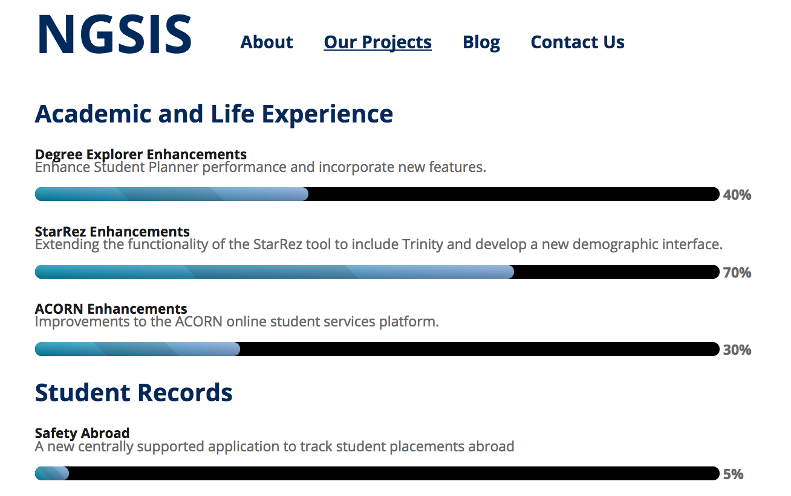
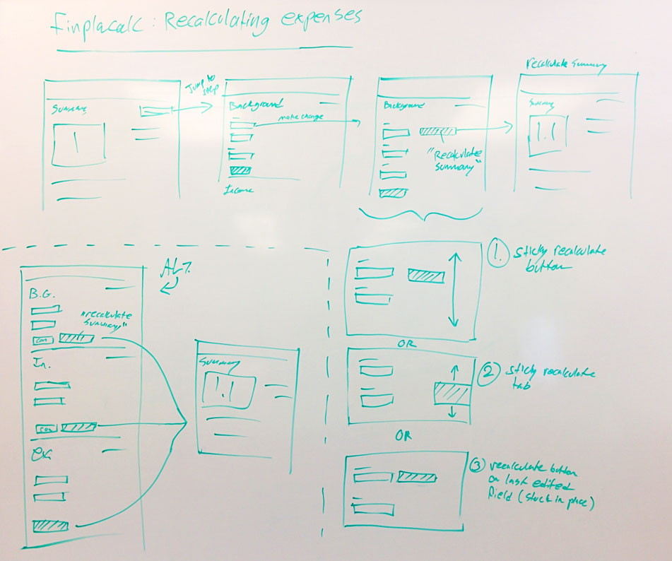

Intro to Rapid Prototyping
TechKnowFile 2017
Press space to navigate
I'm Laura.
Junior UX Designer in the NGSIS program
Studied Interactive Digital Media at UTM
Fun with acronyms!
User Experience Design (UX)
Goal: Make things more usable, useful and enjoyable to use.
UX isn't just "making things pretty"

Next Generation Student Information Services
Tutorial: Rapid Prototyping
- What?
- Why?
- How?
Step 1: Identify your outcomes
- What is your project's current state?
- Where do you want it to be?
- How much time and resources do you have?
Let's look at an example
Example: Board Game Cafe
Outcomes:
- Bring more people to the cafe
- Provide visitors with more information before they arrive
Step 2: Sketch ideas exhaustively
Step 3: Start prototyping
Goals:
- Make a prototype of your idea as quickly and cheaply as possible
- Get the most value from the least work done
- Test your assumptions
Tip 1: hotspot templates
Tip 2: anchors
Step 4: Put it in front of someone
Usability Testing Guidelines:
- Don't ask leading questions
- Don't instruct the user
- Welcome criticism
Step 5: Iterate
Back to the drawing board!
When are you "done?"
- When you've fixed all major issues
- When you've met your outcomes
Step 6: Communicating your design
Prototypes are good guides, but leave a lot to the imagination.
Not the best, but getting there.
That's it!
Contact: laura.klamot@utoronto.ca
Slides: lauraklamot.com/tkf/2017
Prototype:
https://invis.io/R7BGAFR6P